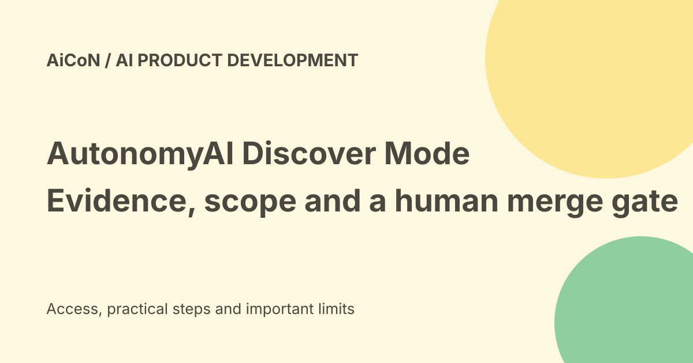

AutonomyAI Discover Mode: evidence, plans, pull requests and pricing limits
AutonomyAI launched Discover Mode as part of its Autonomous Product Delivery system on 24 September 2026. It researches a product question, turns findings into a plan and builds a proposed code change. Engineers remain responsible for review and merge.

What does Discover Mode do?
The company describes asking a question such as why fewer users completed signup after a design change. Discover Mode researches analytics, support tickets, customer calls and the codebase.
Its output is a Discovery Brief with findings, source references, information gaps and possible next steps. This is an evidence-based workflow claim, not a guarantee that the diagnosis is correct.
Why evidence still needs checking
A correlation between a release and a metric drop does not by itself prove the release caused it. Missing events, traffic changes or a tracking bug can distort the result.
Ask whether the brief identifies the time period, affected group, source records and uncertainty. Open the cited evidence before turning an AI explanation into a product decision.
Plan Mode
Plan Mode turns a brief or existing ticket into a specification mapped to the product's architecture. The company says it can catch duplicates and requests that cannot be built before code review.
A specification explains the intended change and constraints. Product owners should still check scope, customer expectations, privacy and success criteria before approving it.
Build Mode and visual checks
Build Mode generates changes using the team's components, design conventions and code patterns. The vendor says it boots the app, renders the interface and checks the result.
A visual check can catch obvious layout mistakes, but it does not prove accessibility, security or correct behaviour in every state. Keep normal tests and engineering review.
What is a pull request?
A pull request, or PR, is a proposed code change submitted for review. It is different from a live production release.
AutonomyAI says its output enters the engineering queue and engineers remain the merge gate. Keep branch protections and deployment approval in your own system rather than relying only on a marketing promise.
Learning from merges
The vendor says every accepted change teaches the system more about the codebase's conventions and test patterns.
That is a product claim. It does not establish a guaranteed speed improvement or remove the need to review later changes. A successful earlier task cannot prove a new security-sensitive change is safe.
Current pricing model
An official 5 October article says current AutonomyAI tiers, Seed through Scale, support unlimited users and are scoped by task volume rather than individual seats. The homepage also describes per-task pricing.
No exact dollar price, included task count, overage amount or free consumer allowance was established in the checked material. Get the written plan terms before connecting company data. Unlimited users does not mean unlimited tasks.
India and free-versus-paid verdict
This is a platform for product teams working with a real codebase, not a verified free general-purpose app. The sources checked do not establish an Indian checkout price, local tax total or unrestricted trial.
A team in Kerala should confirm contracting, payment, data handling and supported integrations directly from the final offer. No demo, subscription or repository connection was started for this guide.
Connected data is sensitive
Analytics, support tickets and customer calls can contain private or identifying information. A code repository can contain secrets and internal business logic.
Check permitted data sources, retention, model-provider access, deletion, access controls and audit records before connecting them. Grant only the access required for the trial. Do not treat a product question as permission to export all customer records.
A careful first evaluation
- Select a low-risk, well-defined product question.
- Choose a limited dataset and test repository.
- Inspect the brief's cited sources and missing evidence.
- Review the plan's scope and acceptance criteria.
- Check the rendered result on phone and desktop.
- Run tests, accessibility and security checks.
- Review the PR through normal engineering controls.
- Check post-release results against the original goal.
Do not give the tool automatic production deployment merely to shorten a demonstration.
Team-count and productivity claims
The launch release says more than one hundred and seventy product teams, including Datadog and Nielsen, use the platform. Those are vendor statements, not an independent audit of active usage or productivity.
Measure your own task quality, review burden and cost. A fast PR that needs substantial correction may not save time.
What changed since the original post?
We add the newer task-volume pricing description, distinguish unlimited users from unlimited work and explain the data and evidence checks before a merge. Exact plan prices remain unverified rather than guessed.
Frequently asked questions
Does the AI decide what ships?
The described workflow leaves review and merge to engineers.
Is unlimited-user pricing unlimited use?
No. The vendor says tiers are scoped by task volume.
Was private company data connected?
No.
Sources: Official Discover/Plan/Build announcement · Current official homepage · Official October task-pricing explanation · Official Fei Studio user guide · Vendor launch release via PR Newswire. Checked 7 October 2026.